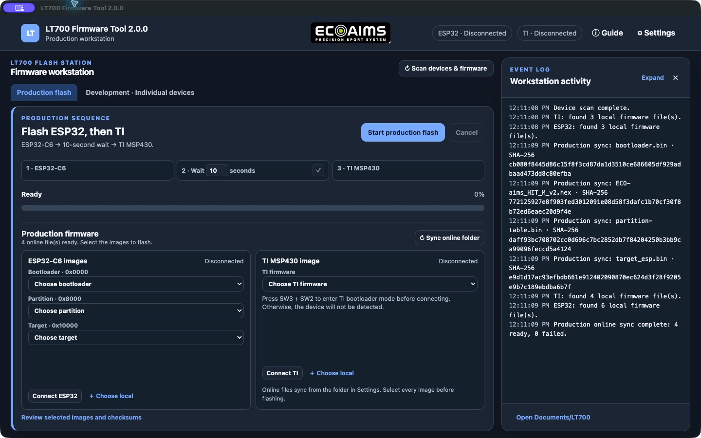
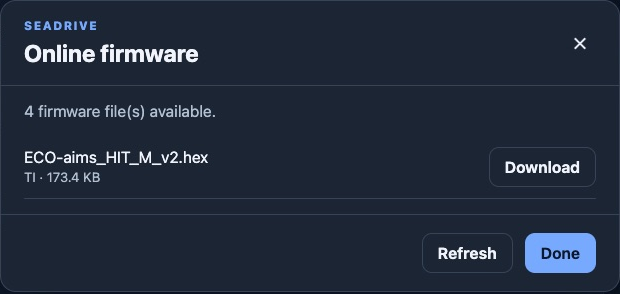
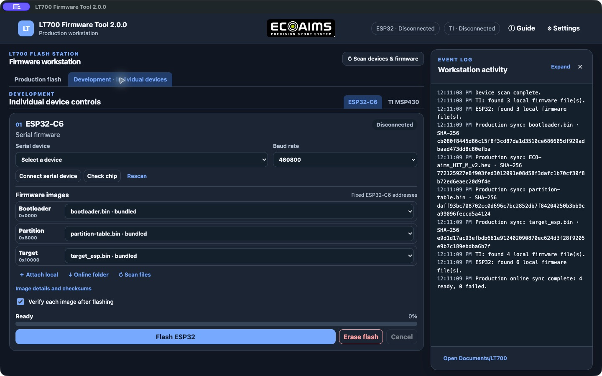
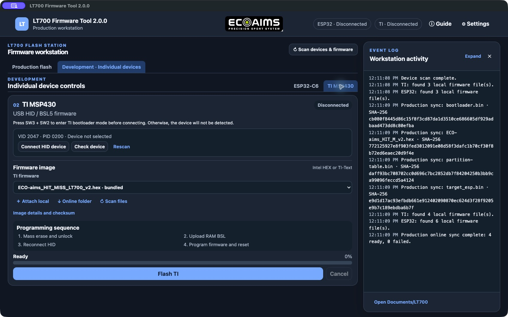
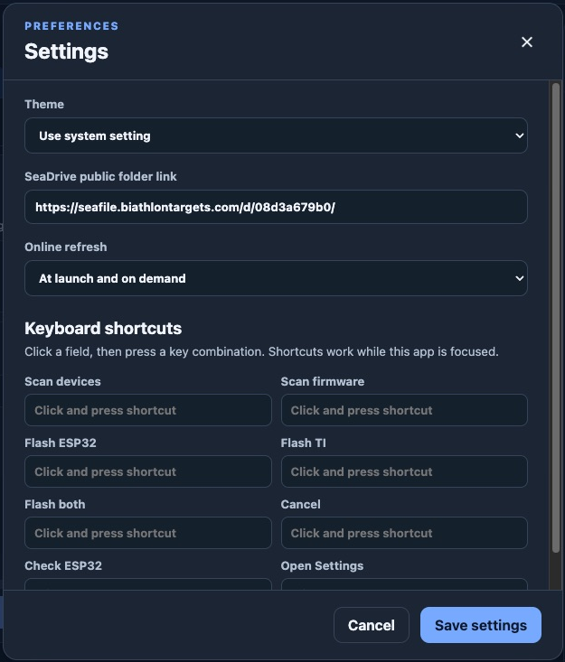
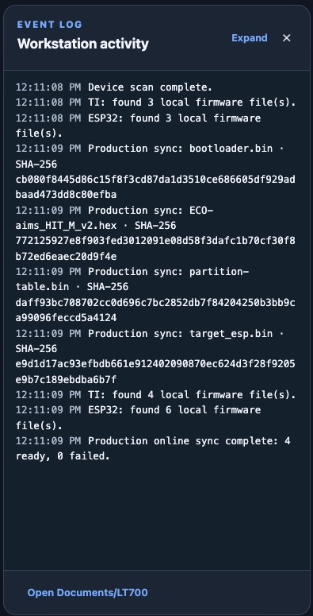

VERSION 2.0.0
From device connection to completed flash
Follow the numbered markers in each screenshot. The screenshots show the app controls and were captured on macOS; the operating controls are the same in the Windows build.
PRODUCTION SEQUENCE
Flash ESP32, wait, then flash TI

123456- Sync the SeaDrive folder and wait for the ready count.
- Choose ESP bootloader, partition, and target images.
- Press SW3 + SW2 to enter TI bootloader mode before Connect TI; then select the TI image.
- Enter 10-60 seconds and click the tick to save. Leaving the field empty saves 10 seconds.
- Connect both devices, review names and SHA-256 values, then start and confirm the flash.
- Watch the progress bar and event log. Cancel if needed.
Production files come from the current online sync or files explicitly attached with Choose local. Every image slot requires an operator selection. The sequence stops if the ESP32 step fails.
FIRMWARE SOURCES
Online folder and local files
Production uses Sync online folder and downloads supported files into its selectors. In Development, Online folder opens the dialog shown below so an individual file can be downloaded. Use Choose local in Production or Attach local in Development for files on the workstation.

123- Download a selected file for Development.
- Refresh the listing from the configured SeaDrive share.
- Click Done and choose the downloaded file.
Supported files: ESP32 .bin; TI Intel HEX .hex or TI-Text .txt, .titxt, .titext. Check filenames and SHA-256 before flashing.
DEVELOPMENT
Individual ESP32-C6 controls

123456- Connect serial device, then select the port and baud rate.
- Review bootloader, partition, and target at fixed addresses
0x0000,0x8000, and0x10000. - Attach local or download online images, then rescan if needed.
- Keep Verify enabled when post-flash verification is required.
- Use Check chip or Flash ESP32; confirm before programming.
- Erase flash clears all ESP contents and requires confirmation.
DEVELOPMENT
Individual TI MSP430 controls

123456- Press SW3 + SW2 to enter TI bootloader mode before connecting. Otherwise, the device will not be detected. Connect HID device (VID 2047, PID 0200).
- Select the intended TI HEX or TI-Text image.
- Attach local, download online, or rescan firmware.
- The sequence mass-erases, uploads RAM BSL, and reconnects HID.
- Click Flash TI and confirm the destructive operation.
- Monitor progress and the event log.
PREFERENCES
Theme, SeaDrive link, and hotkeys

12345- Choose System, Light, or Dark theme.
- Edit the public HTTPS SeaDrive folder link. Sync after changing it.
- Choose launch and on-demand refresh, or on-demand only.
- Click a shortcut field, then press a key combination. Shortcuts work while the app is focused.
- Scroll inside Settings for the remaining actions, then Save settings.
Assignable actions: scan devices, scan firmware, flash ESP32, flash TI, flash both, cancel, check ESP32, and open Settings. Backspace or Delete clears a shortcut; duplicate combinations are rejected.
COMPLETION
Logs, results, and recovery

12- Expand or close the event log. After an operation, read the final success, failure, or cancellation result.
- Open
Documents/LT700to find the automatically saved, timestamped flash, erase, or check log.
If something stops
- No ESP serial port: check USB cable, power, and CP210x driver, then Rescan.
- No TI HID device: press SW3 + SW2, reconnect, then Check device.
- SeaDrive unavailable: check the link and network, retry Sync, or Choose local files.
- Image or checksum mismatch: stop and select the intended firmware.
- Cancelled or failed flash: treat the unit as incomplete. Review its log and repeat the full intended sequence.
Functional acceptance of flashing and USB detection still requires real LT700 hardware.